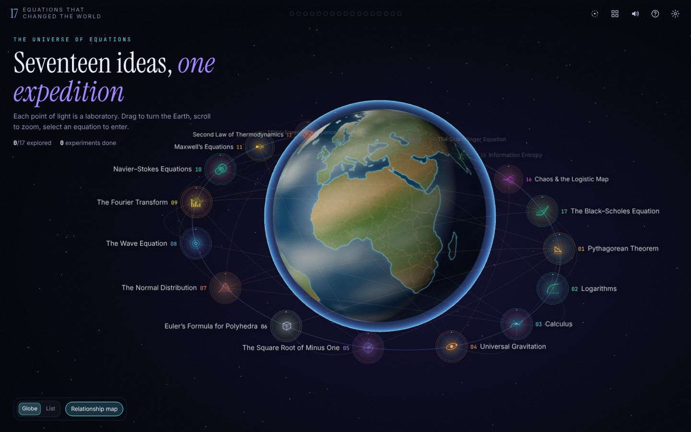
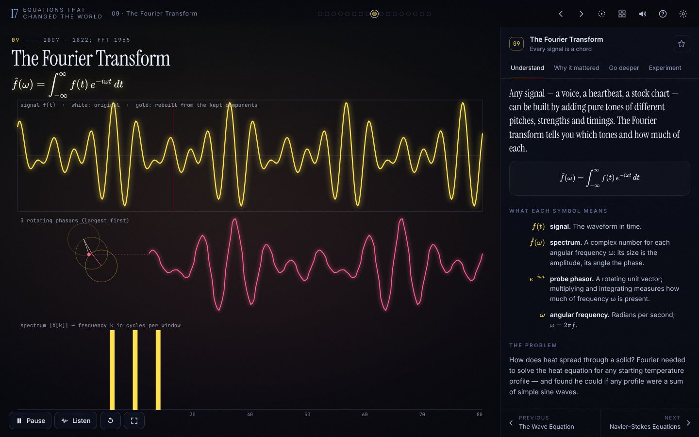

The index
Seventeen dots on a 2,500-year line.
Each dot is where the equation's story begins (rounded; many have several authors). Spacing is stretched toward the present so the recent ones do not pile up. Read down the column and the dots march to the right: most of this mathematics is recent. Pick any row to open that lab.
- 01 Pythagorean Theorema² + b² = c² c. 1800 BCE–300 BCE
- 02 Logarithmslog(ab) = log a + log b 1614
- 03 Calculusdy/dx = lim h→0 [f(x+h) − f(x)] / h 1665–1690s
- 04 Universal GravitationF = G m₁m₂ / r² 1687
- 05 The Square Root of Minus Onei² = −1 1545–1806
- 06 Euler’s Formula for PolyhedraV − E + F = 2 1750–1752
- 07 The Normal Distributionf(x) = 1/(σ√2π) · e^(−½((x−μ)/σ)²) 1733–1810
- 08 The Wave Equation∂²u/∂t² = c²∇²u 1746
- 09 The Fourier Transformf̂(ω) = ∫ f(t) e^(−iωt) dt 1807–1822; FFT 1965
- 10 Navier–Stokes Equationsρ(∂u/∂t + u·∇u) = −∇p + μ∇²u + f 1822–1845
- 11 Maxwell’s Equations∇·E = ρ/ε₀ 1861–1865
- 12 Second Law of ThermodynamicsΔS ≥ 0 1824–1877
- 13 Mass–Energy EquivalenceE = mc² 1905
- 14 The Schrödinger Equationiħ ∂ψ/∂t = Ĥψ 1926
- 15 Information EntropyH(X) = −Σ p(x) log₂ p(x) 1948
- 16 Chaos & the Logistic Mapxₙ₊₁ = r xₙ(1 − xₙ) 1838; 1970s
- 17 The Black–Scholes Equation∂V/∂t + ½σ²S² ∂²V/∂S² + rS ∂V/∂S − rV = 0 1973
Dates and attributions follow the notes inside each lab, which flag where the credit is shared.
It is a set of instruments, not a slideshow.
-
The solvers are real, and tested.
Navier–Stokes runs a 2-D fluid solver in a Web Worker. The wave equation is stepped with a Courant-safe time step. The Fourier lab uses a radix-2 FFT that is checked against a direct DFT. 35 automated tests compare the models with independent results, such as textbook Black–Scholes prices and Kepler's one-year orbit.
-
Nothing leaves your browser.
No account, no API keys, no network calls at run time. Fonts, KaTeX, Three.js and the world-map data are bundled, and a service worker caches about 2 MB on your first visit. After that it runs with the network off. Progress and bookmarks sit in your browser's local storage.
-
The experiments notice what you did.
Each lab has guided experiments that detect when you have actually done them, or you can switch to discovery mode and wander. Every simulation lists its simplifications under Limits & caveats, so you know where the model stops being the world.
How it works
Three moves per equation.
- Pick a point of light.The 17 equations orbit a 3-D Earth you can drag and zoom. Small screens get a plain list.
- Move something.Drag a triangle, a slit, a probability. The equation, the readouts and the picture update together.
- Check yourself.Finish the guided experiments, read why it mattered, then follow a link to the next connected equation.
Inside
What you will actually see.


Compared honestly
Where it wins, and where it does not.
| 17 Equations | Explainer videos | Graphing tools | Textbook or Wikipedia | |
|---|---|---|---|---|
| You | Poke a ready-made model | Watch, and pause to think | Build the model yourself | Read, derive, check |
| Wins at | Feeling how one variable moves the rest; works offline | Narrative and intuition; far more topics | Open-ended exploration of any function | Rigour, coverage and citations |
| Loses at | Only 17 topics; simplified models; not a curriculum | You cannot change the parameters | No guidance; you must know what to plot | Nothing moves |
Questions
Short answers.
Is it free?
Yes. There is no paywall and no account. Optional tips keep the project going; see the pricing page.
Is my data safe?
The app makes no network calls while you use it. Your progress, bookmarks and settings stay in your browser's local storage, and "reset progress" in settings clears them.
Can I run it myself?
Yes. npm install, then npm run dev. After one install, npm run offline builds and serves it with no connection at all.
Can I use it in a classroom or commercially?
Yes. The code is MIT licensed: use it, modify it and host it, keeping the copyright and licence notice. Bundled dependencies carry their own permissive licences; the README lists them.
Are the simulations exact?
They are real numerical models, not scripted animations, but they are simplified. Each lab states its simplifications under "Limits & caveats". Nothing here is investment advice.
How do I contribute?
Bug reports and fixes are welcome on GitHub; CONTRIBUTING.md has the setup. A star or a share helps too.